Table of Contents
Intro
MIA Dictionary is an Anki 2.1 add-on designed to radically streamline the process of using Anki for language learning. It comes with a host of features that help users perform precise look-ups and swiftly craft cards, including global hotkeys for instant look-ups, automatic deconjugation, frequency list integration, single-click definition exporting to cards, mass definition exporting, on-the-fly card creation, and more.
You can view the AnkiWeb page for the add-on here.
This guide can also be viewed on the MIA website.
Installation
Deleting MIA Dictionary
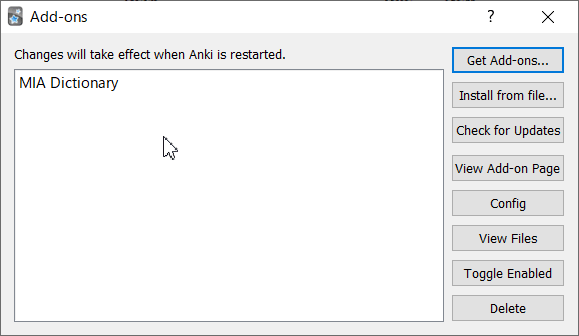
Attempting to delete MIA Dictionary while it’s enabled will cause the error shown in the above GIF to occur. This happens because MIA Dictionary’s SQLite database is currently open, and open SQLite databases cannot be deleted.
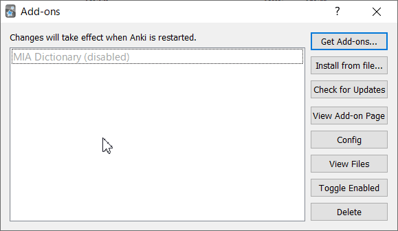
To prevent this, simply disable MIA Dictionary and restart Anki before deleting the add-on. Alternatively, you can also delete the add-on by closing Anki and deleting MIA Dictionary’s folder from your Anki add-ons folder (C:\Users\[user]\AppData\Roaming\Anki2\addons21\1655992655).
Dictionaries
You can find a library of open-source dictionaries and frequency lists pre-packaged for use with the add-on here.
(If you have trouble downloading from MEGA, make sure to allow any site to download multiple files automatically in your browser.)
To quickly get started, download the entire folder for your target language, and place it in the following directory:
C:\Users\[user]\AppData\Roaming\Anki2\addons21\1655992655\user_files\dictionaries
Each folder contains every open-source dictionary currently available for that language. When available, a frequency list and/or conjugation table is included as well.
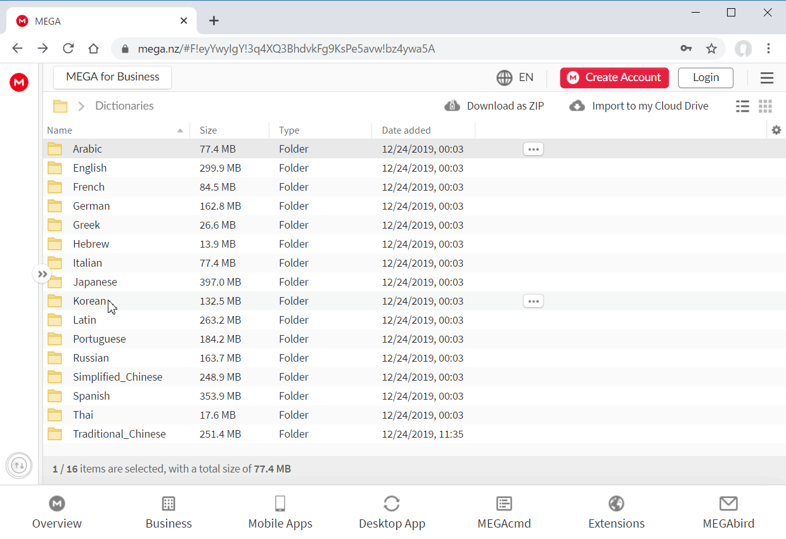
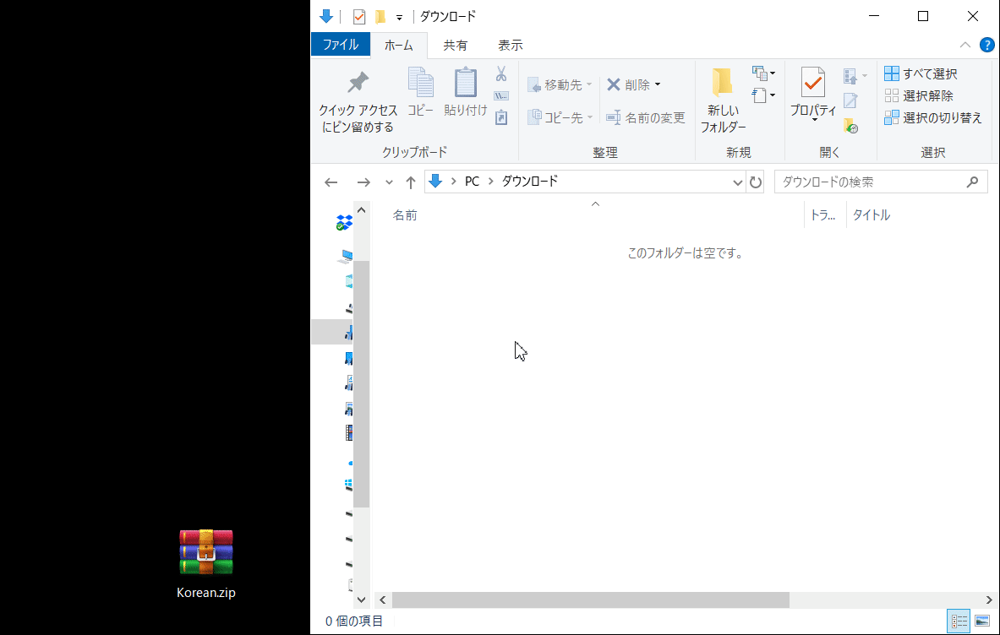
Next time you open Anki, the dictionaries will automatically be installed into the add-on. Once the installation finishes, the dictionaries will be ready for use.
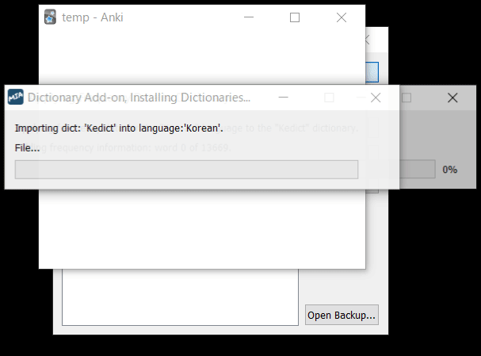
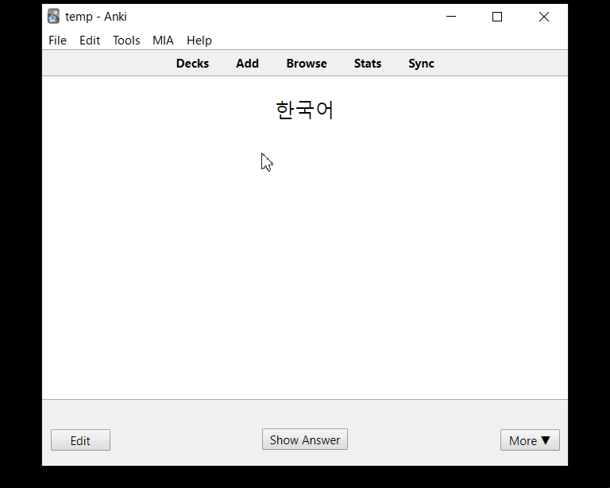
Supported File Formats
MIA Dictionary supports dictionaries in two different file formats: the Yomichan Dictionary format, and the proprietary MIA Dictionary format.
Yomichan is a Japanese dictionary browser extension for Firefox and Chrome. Dictionaries for Yomichan come in the form of a ZIP file containing a series of JSON files. To use a Yomichan dictionary with MIA Dictionary, extract the JSON files inside the ZIP file into a folder.
Proprietary MIA Dictionary Format
Dictionaries in the proprietary MIA Dictionary format consist of a single JSON file. The format of the JSON file is as follows:
[{"term": "", "altterm": "", "pronunciation": "", "definition": "", "pos": "", "examples": "", "audio": ""}, {"term": "", "altterm": "", "pronunciation": "", "definition": "to separate", "pos": "", "examples": "", "audio": ""}]
Where,
- “Term” is the term being defined.
- “Altterm” (alternative term) is an alternative form of the term. For searching purposes, the alterm functions the same as the main term. Each entry can have one altterm value. If the altterm is the same as the main term, it will be ignored.
- “Pronunciation” is how the term is pronounced.
- “Pos” is part of speech.
- “Examples” is for example sentences.
- “Audio” is the location of an audio file of the term being pronounced.
“Altterm”, “pos”, “examples”, and “audio” can be empty strings. “pos”, “examples”, and “audio” currently not yet implemented in the add-on.
Example from CEDICT Chinese to English dictionary:
[{"term": "分隔", "altterm": "", "pronunciation": "fēn gé", "definition": "to divide/to separate/partition", "pos": "", "examples": "", "audio": ""}, {"term": "分离", "altterm": "分離", "pronunciation": "fēn lí", "definition": "to separate", "pos": "", "examples": "", "audio": ""}]
Example from Kengdict Korean to English dictionary:
[{"term": "사회", "altterm": "社會", "pronunciation": "", "definition": "culture,society", "pos": "", "examples": "", "audio": ""}, {"term": "사회 계층", "altterm": "", "pronunciation": "", "definition": "stratification", "pos": "", "examples": "", "audio": ""}]
Installing Dictionaries
To install a dictionary, simply place it within the correct location inside the add-on’s folder structure and restart Anki. Upon profile load, the dictionary will automatically be imported into the add-on.
How it works:
In order to maximize the search speeds, MIA Dictionary creates a single SQLite database to use when searching (C:\Users\[user]\AppData\Roaming\Anki2\addons21\1655992655\user_files\db\dictionaries.sqlite). This SQLite database is created through importing the dictionaries contained within the add-on’s folder structure. Each time an Anki profile is loaded, the add-on checks to see if any changes have been made to the folder structure. If there has, the SQLite database is updated to stay in sync with the current folder structure. This system allows users to easily add and remove dictionaries simply by arranging the folder structure.
Folder Structure
The folder structure for dictionaries is as follows:
C:\Users\[user]\AppData\Roaming\Anki2\addons21\1655992655\user_files\dictionaries\[language]\[dictionary_name]\dictinoary_files.json
Within the “dictionaries” folder, dictionaries are grouped together into folders based on language.
The language category of bilingual dictionaries is based on the terms defined in the dictionary. For example, a dictionary that translates the meaning of Japanese words into English would be considered a “Japanese” dictionary.
Dictionary files are placed within their own folder, inside of the folder for the dictionary’s language. In order for dictionaries to be imported properly, the dictionary files must be contained within a folder just for that dictionary.
For Yomichan dictionaries, extract the JSON files inside the ZIP file into a folder you created for the dictionary. For proprietary MIA Dictionary format dictionaries, place the single JSON file inside a folder you created for the dictionary.
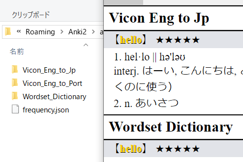
The name of the folder will determine the dictionary’s name within the add-on. Every dictionary’s folder must have a unique name, regardless of the language category. Folder names must not contain any special characters (spaces, punctuation, parentheses, brackets, math symbols etc.). To include spaces in a dictionary’s name, use underscores; underscores within folder names will automatically appear as spaces inside of the add-on.
Removing Dictionaries
To remove a currently installed dictionary, simply remove the dictionary’s file and folder from the add-ons folder structure and restart Anki. Upon profile load, the dictionary will automatically be removed from the database.
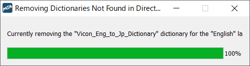
Once the dictionary is removed from the database, the database will be optimized. Although removing a dictionary from the database is nearly instantaneous, this optimization process can take some time to complete. While it is taking place, the “removing dictionaries” progress bar will remain at 100%. This can make it appear as though Anki has frozen, but in reality, this is not the case.
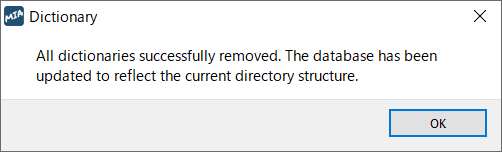
To ensure the optimization process gets fully completed, please make sure not to interrupt Anki until the “all dictionaries successfully removed” confirmation window appears.
The more dictionaries you have currently installed, the longer the optimization process will take.
Built-in Dictionaries
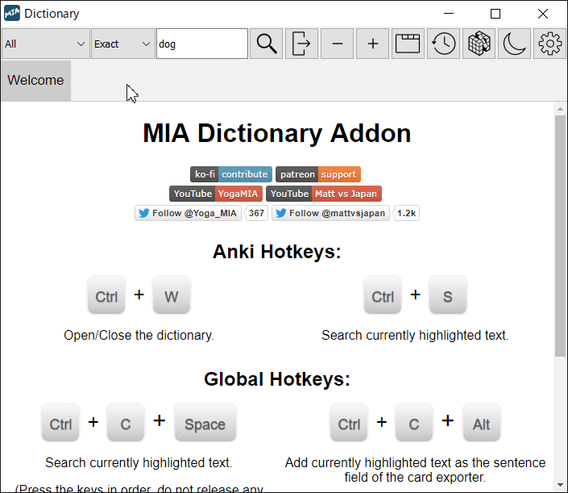
MIA Dictionaries comes with two built-in dictionaries: Google Images and Forvo.
“Forvo.com is a website that allows access to, and playback of, pronunciation sound clips in many different languages in an attempt to facilitate the learning of languages.” –Wikipedia
For most of the add-on’s features, Google Images and Forvo function the same as normal dictionaries.
You can modify Google Image’s search region and resizing parameters, and Forvo’s language, in Settings.
Frequency Lists
Frequency lists are used in the frequency score feature.
Frequency List Format
In order for the frequency score feature to work, frequency lists must be configured as JSON files formatted in the following way:
["you", "I", "the", "to", "a", "it", "and", "that", "of", "in", "what", "is", "me", "we"]
In this example, “you” represents the most common word in the language, followed by “I”, etc.
For Japanese, there is also an alternative format that allows readings to be associated with each word:
[["此れ","コレ"], ["私","ワタクシ"], ["時","トキ"], ["まで","マデ"], ["から","カラ"], ["見る","ミル"]]
This allows the add-on to differentiate words that are written the same but pronounced differently, e.g., 心中(しんちゅう) and 心中(しんじゅう). All readings in this format must be in katakana, even for words usually written in hiragana.
Something to watch out for is that when multiple words are written the same way, they will all receive the same frequency score as the one that’s most frequently used. For example, take the verb “combine” and the noun “combine”. Although these two words share the same spelling, they’re pronounced differently and mean different things. If the verb “combine” was a “3 star” word and the noun “combine” was a “2 star” word, both words would appear to be “3 star” within the add-on (see the frequency score section for an explanation of these terms). In the case of Japanese, this issue can be partially avoided by using a frequency list that includes readings.
Frequency List Installation
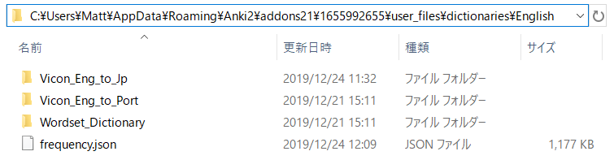
To install a frequency list, name the file frequency.json and place it in the corresponding language category’s folder (C:\Users\[user]\AppData\Roaming\Anki2\addons21\1655992655\user_files\dictionaries\[language]). Only one frequency list per language can be installed at a time.
At the time of importing a new dictionary, the add-on integrates frequency information from frequency.json directly into that dictionary’s information within the database. Because of this, a given frequency list will only be applied to dictionaries that are installed after the frequency list was. Said another way, when you install a new frequency list, it won’t automatically be applied to the dictionaries that are already installed. To apply a frequency list to dictionaries that were installed before the frequency list was, remove and reinstall the dictionaries.
Conjugation Tables
Conjugation tables are used in Deconjugation Mode.
Check out the Deconjugation Mode section for an explanation of what conjugation tables are and how they work.
Conjugation Table Format
In order for conjugation tables to function properly, they must be configured as JSON files formatted in the following way:
[{"inflected":"いなさい","dict":["う"]}, {"inflected":"いました","dict":["う"]}, {"inflected":"いません","dict":["う"]}, "inflected":"かったら","dict":["い"]}, {"inflected":"かったり","dict":["い"]}, {"inflected":"きすぎる","dict":["く","くる"]}, {"inflected":"ぎすぎる","dict":["ぐ"]}, {"inflected":"きちゃう","dict":["くる"]}, {"inflected":"きなさい","dict":["く","くる"]}, {"inflected":"ぎなさい","dict":["ぐ"]}, {"inflected":"きました","dict":["く","くる"]}, {"inflected":"ぎました","dict":["ぐ"]}, {"inflected":"きません","dict":["く","くる"]}]
Where,
- “Inflected” is a conjugated word-ending (or in the case of irregular words, an entire conjugated word, e.g., ran).
- “Dict” is the corresponding dictionary form-ending (or in the case of irregular words, the entire corresponding dictionary form, e.g., run).
Conjugation Table Installation
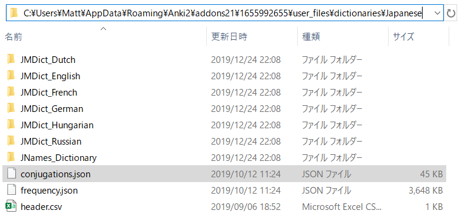
To install a conjugation table, name the file conjugations.json and place it in the corresponding language category’s folder (C:\Users\[user]\AppData\Roaming\Anki2\addons21\1655992655\user_files\dictionaries\[language]). Only one conjugation table can be installed at a time.
Unlike frequency lists and header.csv’s, once a conjugation table is installed, it will immediately be applied to all the dictionaries in the given language category. Removing and reinstalling dictionaries that were installed before the conjugation table was is not necessary.
Header.csv
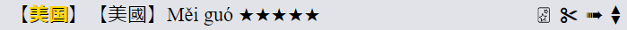
By default, the order that information in definition headers appears in is “term → alternative term → pronunciation”.
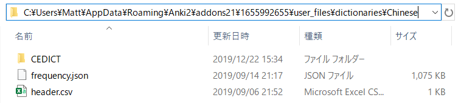
You can modify this order for dictionaries that belong to a given language category by creating a CSV file titled header.csv and placing it in that language category’s folder (C:\Users\[user]\AppData\Roaming\Anki2\addons21\1655992655\user_files\dictionaries\[language]).
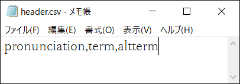
The following are the five possible configurations for header.csv’s contents:
term,pronunciation,altterm
altterm,term,pronunciation
altterm,pronunciation,term
pronunciation,term,altterm
pronunciation,altterm,term
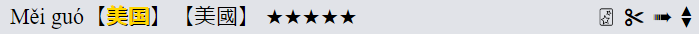
The order the information in headers appears in for a given dictionary is determined at the time the dictionary is initially imported into the database. Because of this, a given header.csv will only be applied to dictionaries that are installed after the header.csv was created. Said another way, when you add a new header.csv, it won’t automatically be applied to the dictionaries that are already installed. To apply a header.csv to dictionaries that were installed before the header.csv was created, remove and reinstall the dictionaries.
Basic Functionality
Opening the Dictionary
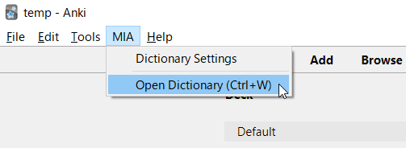
You can access the dictionary by going to “MIA” on Anki’s menu bar and selecting “Open Dictionary”. Alternatively, you can use the hotkey “Ctrl+W” (“⌘+W” on Mac) to both open and close the dictionary.
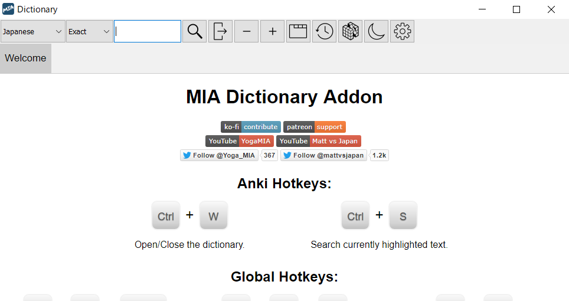
The dictionary will open to the welcome screen, where you can see an overview of the add-on’s hotkeys.
Global hotkeys are hotkeys that work anywhere on your computer when Anki is open. If the add-on’s global hotkeys are causing collisions with other programs, you can turn them off in Settings.
The welcome screen will automatically disappear once you search a word.
Searching
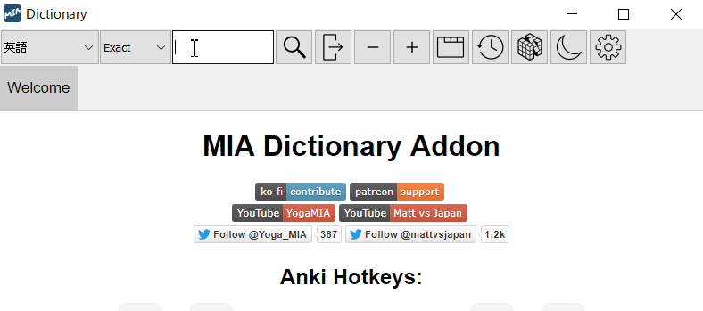
In order to search a word, type it into the Search Bar and press the Search Button.
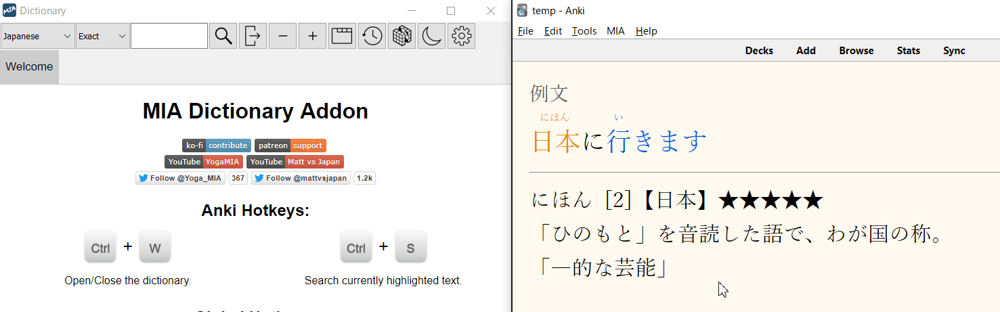
You can also search a word anywhere inside of Anki (including the dictionary itself) by highlighting it, right-clicking, and selecting “Search”. The hotkey to search a word within Anki is “Ctrl+S” on PC or “⌘+S” on Mac (“S” for “search”).
You can search a word outside of Anki by highlighting it and pressing the global hotkey “Ctrl+C+Space” on PC or “⌘+C+B” on Mac (press the keys in that order; do not release any until they are all pressed).
Dictionary Groups
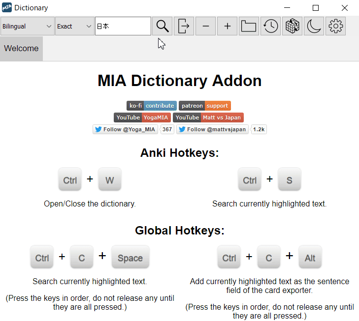
Dictionary Groups are specific sets of dictionaries that will be looked through when searching. You can select which Dictionary Group to search with the drop-down on the top-left. You can create custom Dictionary Groups in Settings.
The add-on also comes with some built-in Dictionary Groups:
- All (searches every dictionary currently installed excluding Google Images and Forvo); dictionaries appear in alphabetical order)
- Google Images
- Forvo
- Language specific (searches every dictionary inside the selected language’s folder; dictionaries appear in alphabetical order)
Search Mode

The Search Mode controls the specific manner with which the add-on searches through dictionaries. You can change the Search Mode with the drop-down left of the Search Bar.
There are five different Search Modes:
- Forward: searches dictionaries for entries that begin with your search query.
- Backward: searches dictionaries for entries that end with your search query.
- Exact: searches dictionaries for entries that perfectly match your search query.
- This mode is compatible with Deconjugation Mode; it will search for entries that exactly match deconjugated versions of your search query.
- Searches in this mode will be considerably faster than the other modes. The reason for this is that this mode only looks for a direct case-sensitive match within the searched dictionaries, and computers are much faster at determining whether a given piece of text matches another piece of text exactly than they are at determining partial matches.
- Definition: searches for entries that contain your search query inside the contents of their definition.
- Example: searches for entries whose definition contains an example sentence that contains your search query.
- This mode works by specifically searching the contents of “「」” brackets. Because of this, this mode only works with Japanese monolingual dictionaries.
Tabs
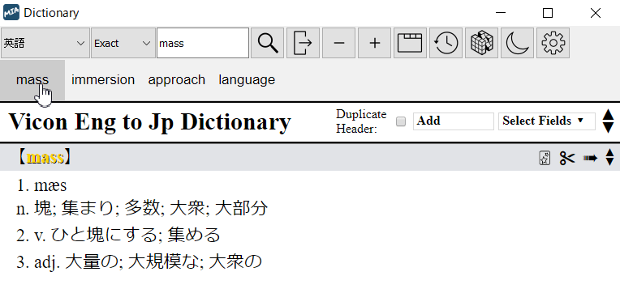
Tabs allow you to easily reference the result of multiple different searches. 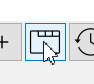
There are two different modes related to tabs: Single-tab Mode and Multi-tab Mode. You can toggle between them by pressing the button with the file folder icon.
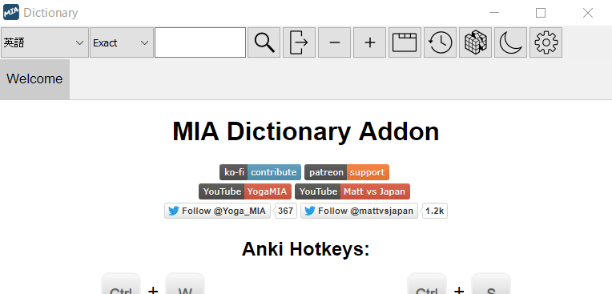
In Multi-tab Mode, each search automatically opens a new tab.
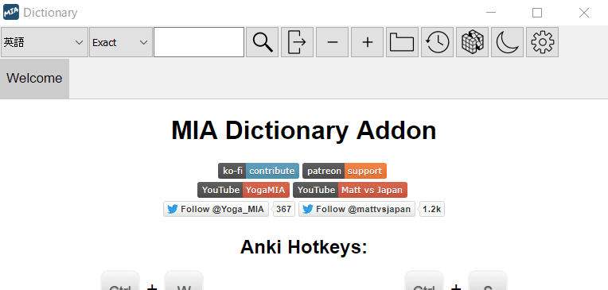
In Single-tab Mode, search results appear in the current tab, overriding the previous search.
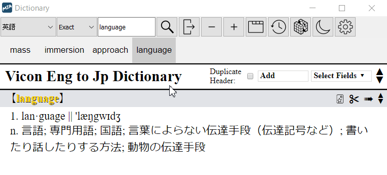
You can close a tab by right-clicking it. Closing the dictionary will result in all tabs being reset.
Deconjugation Mode
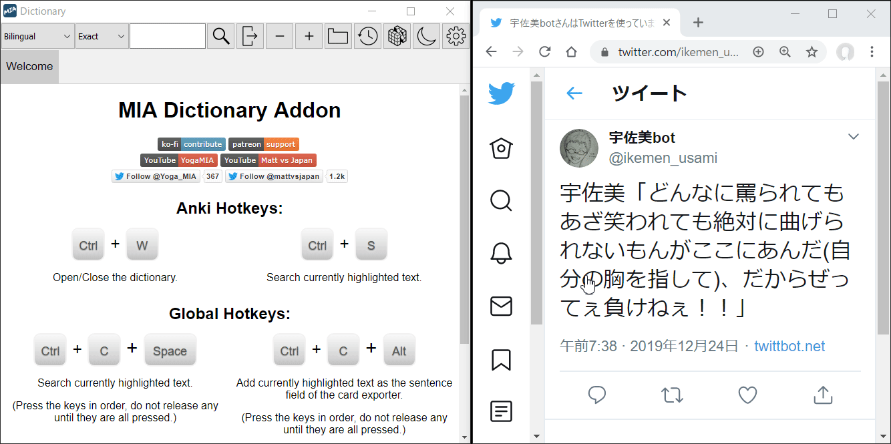
Deconjugation Mode allows you to search the conjugated forms of words and automatically find entries for their original, unconjugated form.
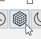
You can toggle Deconjugation Mode on and off by pressing the button with a Rubik’s Cube icon. When all three rows of the Rubik’s Cube are aligned, Deconjugation Mode is off. When the middle row is partially rotated, Deconjugation Mode is on.
In order for Deconjugation Mode to function for a given language, a conjugation table for that language must be installed.
A conjugation table is a list of all conjugated word-endings that exist in a language, and every potential dictionary form-ending corresponding to each of those conjugated word-endings. In the case of irregular words, the conjugation table will contain the entire conjugated word (e.g., ran) and its entire corresponding dictionary form (e.g., run).
When a search is conducted with Deconjugation Mode on, the add-on will check the end of your search query for matching conjugated word-endings in the conjugation table. For each match that’s found, the add-on will replace the conjugated word-ending with every potential corresponding dictionary form ending, and search that along with the original search query.
Deconjugation Mode is compatible with the “Exact” Search Mode; the add-on will search for entries that exactly match potential deconjugated versions of your search query.
Due to the brute force nature of this process, some unrelated entries may show up among search results. For Japanese terms, searching verbs and adjectives in their kanji form (as opposed to in full kana) will result in fewer unrelated entries.
Although creating more precise deconjugation algorithms is possible, they would have to be specific to individual languages. This method of deconjugation was chosen because it’s equally applicable to any language.
Brackets
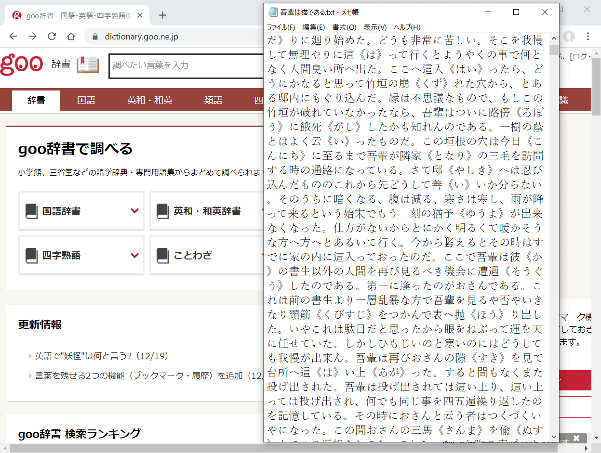
In some languages, such as Japanese, brackets are often used to display the readings of words. Sometimes these brackets are placed directly in the middle of words. In these cases, in order to look up the word, normally you would have to manually remove the brackets before searching.
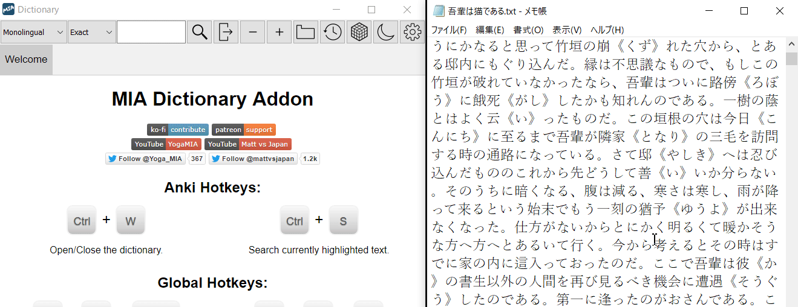
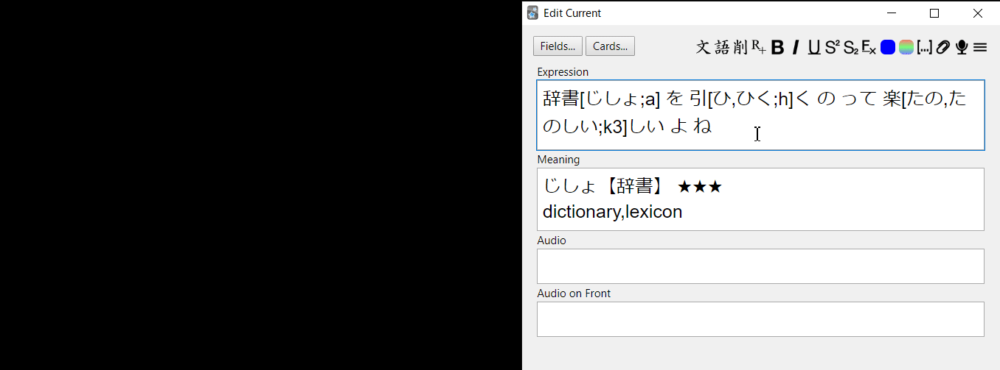
In order to remove this inconvenience, the add-on automatically excludes brackets and the contents of closed brackets from searches. The following are the specific types of brackets that are excluded: (), [], （）, 《》.
Search Collection
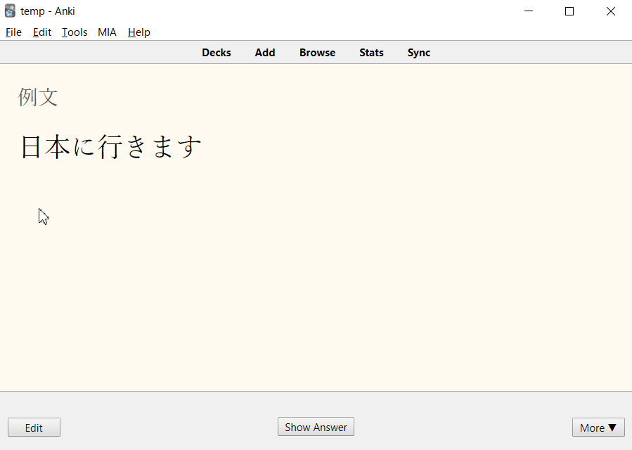
Anywhere within Anki (including the dictionary), you can search your own Anki collection for a word or phrase by highlighting it, right-clicking, and selecting “Search Collection”.
Main Dictionary Window
When a search result contains entries that span across multiple dictionaries, entries from the same dictionary are grouped together under that dictionary’s header. The order that dictionaries are displayed is determined by the currently selected Dictionary Group.
Within a given dictionary, if a frequency list has been installed for the dictionary’s language, entries will be displayed in order of frequency, with the most frequent entry shown first. If a frequency list hasn’t been installed, entries will be displayed in alphabetical order.
Dictionary Headers
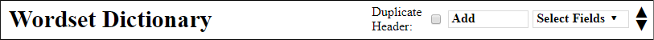
The name of the dictionary appears on the left side of dictionary headers. To the right, there’s the Duplicate Header toggle, Output Mode drop-down, Field Selector drop-down, and Next/Previous Dictionary button.
The Duplicate Header toggle, Output Mode drop-down, and Field Selector will be explained in the Sending Definitions to Fields section.

The Next/Previous Dictionary button allows you to jump between adjacent dictionary headers.
Definition Headers
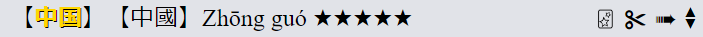
On the left side of definition headers are the term, alternative term, pronunciation, and frequency score. On the right, there’s the Send to Exporter button, Copy button, Send to Field button, and Next/Previous Entry button.
The order in which the term, alternative term, and pronunciation appear in can be modified by adding a header.csv. The brackets surrounding the term and alternate term can be modified in Settings. Frequency scores will be explained in the following section.

When none of the definition is highlighted, the Copy button copies the entire definition to your clipboard. When part of the definition is highlighted, the Copy button copies the highlighted portion to your clipboard.
The Next/Previous Entry button allows you to jump between adjacent definition headers. The Send to Exporter button will be explained in the Card Exporter section. The Send to Field button will be explained in the Sending Definitions to Fields section.
Frequency Score
From the perspective of a language learner, the more often a word is used in native speech and text, the more that learning it will increase comprehension. Because of this, the value of a word is directly proportional to how frequency they’re used.
Frequency scores are a tool for quickly assessing the frequency of words, designed to help simplify the decision of whether a word is worth learning or not. Each word is given a score between 5 and 0, corresponding to its position on a frequency list:
★★★★★: 0 – 1.5k
★★★★: 1.5k – 5k
★★★: 5k – 15k
★★: 15k – 30k
★: 30k – 60k
__: 60k+
For example, if a word is ranked “5 star”, you know that it’s one of the 1,500 most common words in the language, and extremely important to learn. Conversely, if a word is ranked “2 star”, that means it sits somewhere between 15,000 and 30,000 on a frequency list, is relatively uncommon, and likely not worth learning until reaching an advanced level in the language.
In order for frequency scores to be displayed for a given language, a frequency list for that language must be installed.
Sidebar
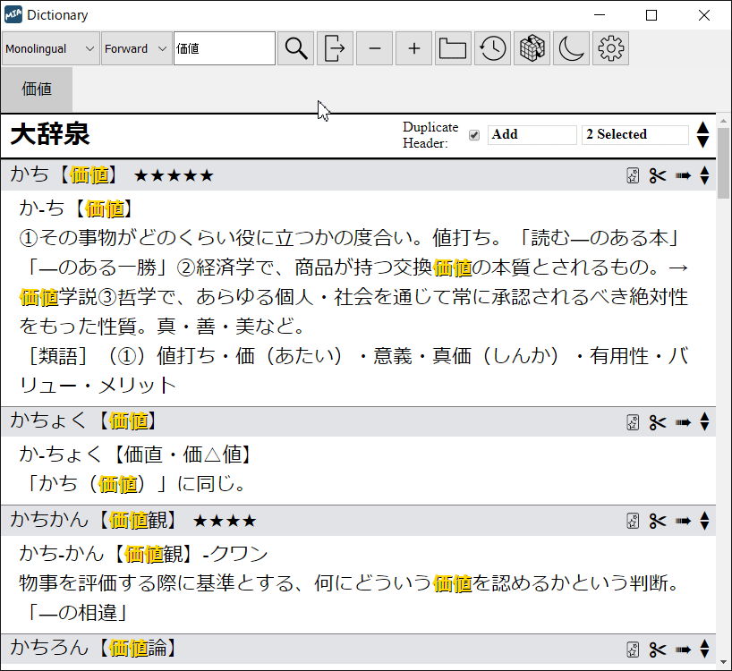
The Sidebar lets you see an overview of the current search results. You can open and close the Sidebar by pressing the button to the right to the search button.
By right-clicking on a dictionary, you can minimize its entries. By clicking on an entry, you can instantly jump to its position in the main window.
Zoom
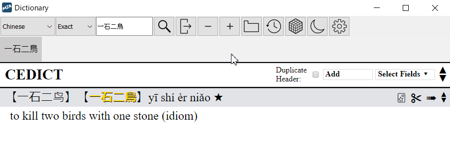
You can make the text size of definitions larger or smaller by pressing the “+” and “-” buttons to the right of the Sidebar button.
History
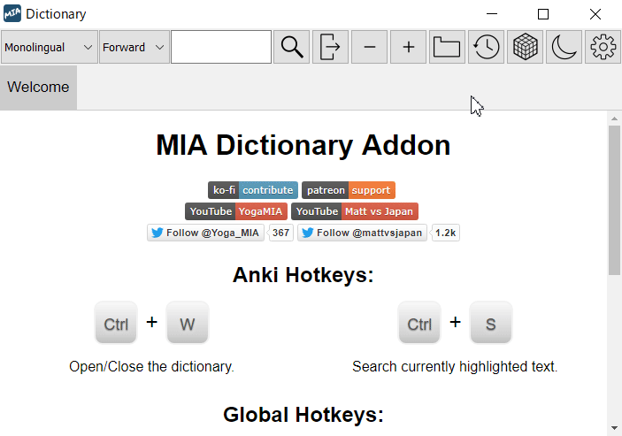 You can view your search history by pressing the button with a clock icon. You can re-search a term from your search history by double-clicking on it. You can also reset your history by pressing “Clear History”.
Night Mode
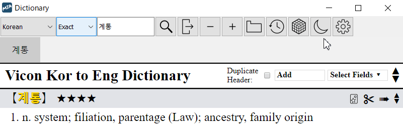
You can toggle Night Mode on and off by pressing the button with a moon/sun icon.
Sending Definitions to Fields
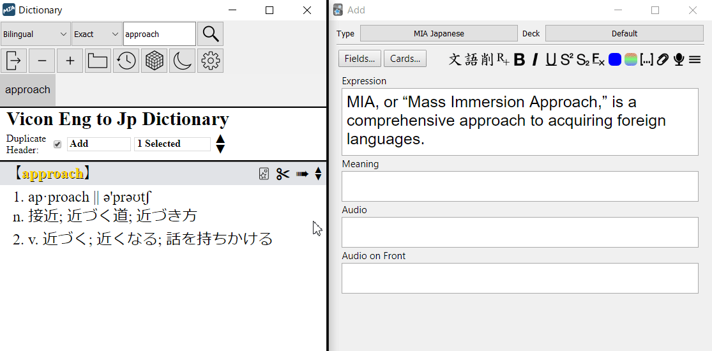
MIA Dictionary can send definitions directly to the fields of cards.
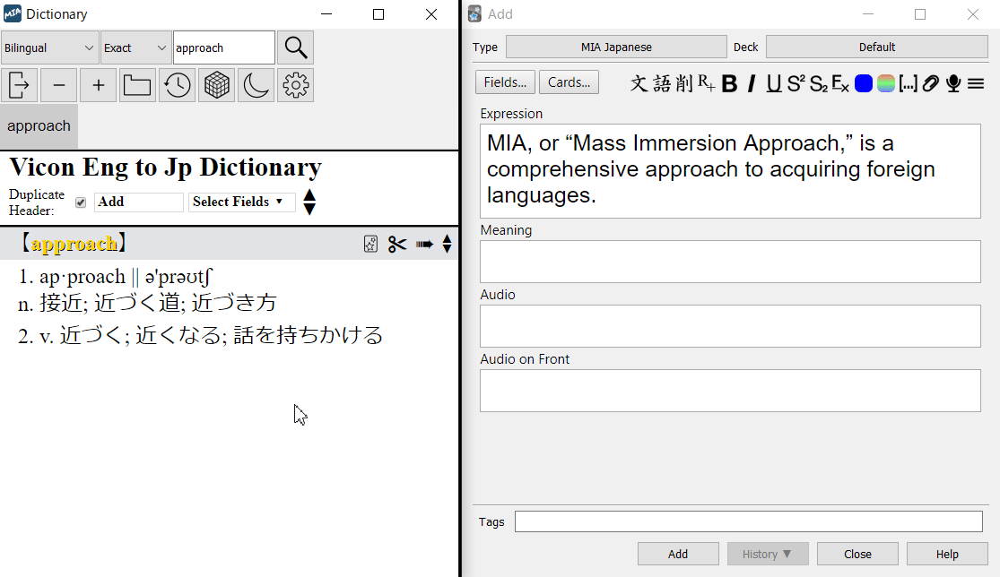
First, choose which fields to send definitions to with the Field Selector drop-down. The add-on will remember which fields you select, so you’ll only have to do this step the first time you use the feature.
Fields are selected on a per-dictionary basis. This is to allow for the flexibility of having different dictionaries send definitions to specific fields. If you regularly use multiple note-types that each have different field names, you can select multiple fields for a single dictionary.
Once you’ve selected which fields to send to, you can press the Send to Field button to send the definition to a card. The Send to Field button is the right-facing arrow located on the right side of the definition header.
Export Target
Definitions can be sent directly to cards anywhere inside of Anki, including:
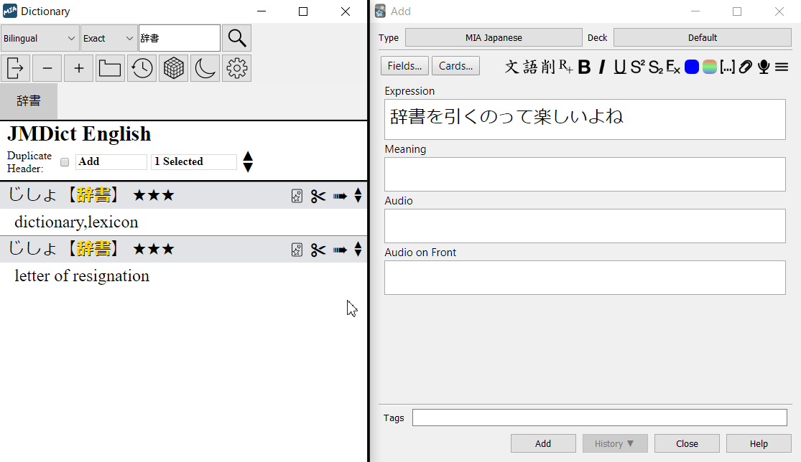
The add window
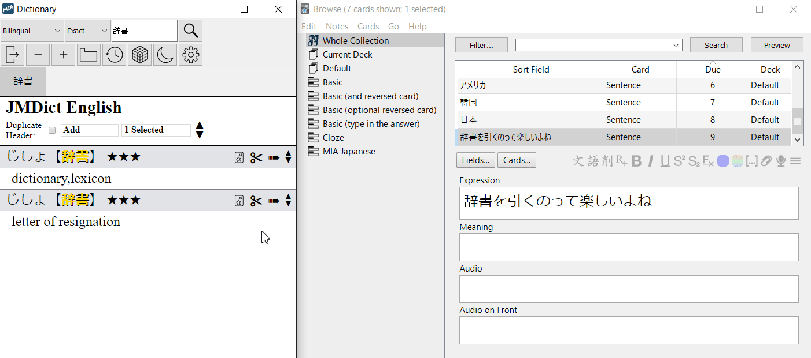
The browser
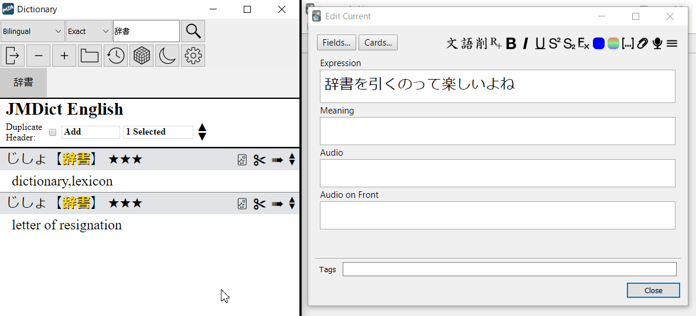
The edit window

And even the review screen, while in the middle of reviewing a card.
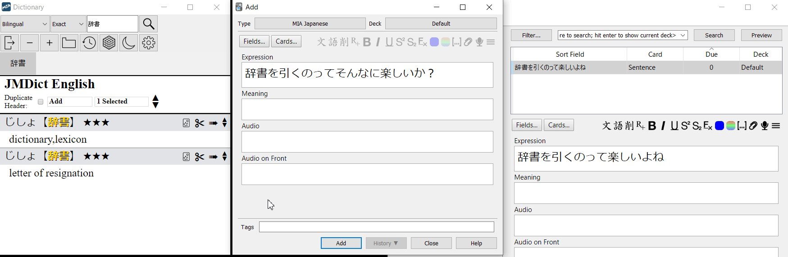
The Send to Field button will only send definitions to one card at a time. If multiple cards are selected across different Anki windows (for example, if a card is selected in the browser and the add window are open at the same time), the definition will be sent to whichever Anki window was most recently selected. If no card is selected in any of Anki’s windows, the Send to Field button will not do anything.
If the definition isn’t sent after pressing the Send to Field button, try clicking on the destination card once before pressing the Send to Field button again.
By turning on “Show Export Target” in Settings, you can see which Anki window is selected at any given time.
Sending a Portion of a Definition
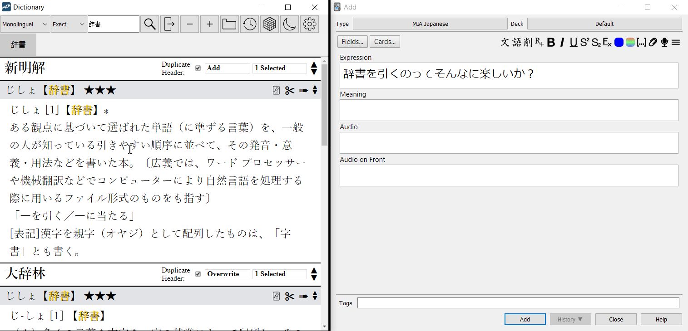
If nothing is highlighted, the Send to Field button will send the entire definition to the destination field. If part of the definition is highlighted, the Send to Field button will send the highlighted portion along with the definition’s header.
Output Modes
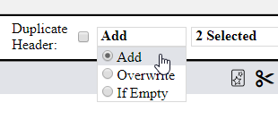
When sending a definition directly to a card, there are 3 different Output Modes to choose from. The Output Mode determines what happens when you send a definition to a field that already has something in it. If the target field is empty at the time of sending, all 3 Output Modes will function identically.

Add: add the definition beneath what’s already in the target field.
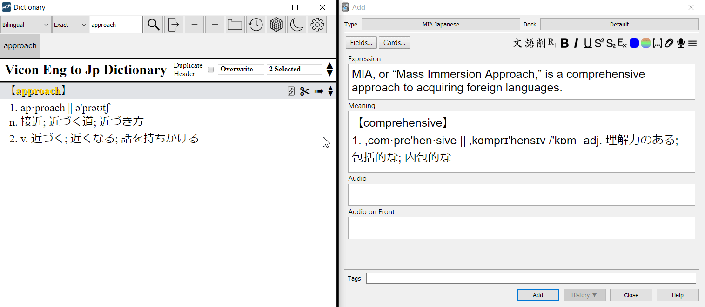
Overwrite: erase whatever is currently in the target field and replace it with the definition.
If Empty: only send the definition if the target field is currently empty.
Duplicate Header
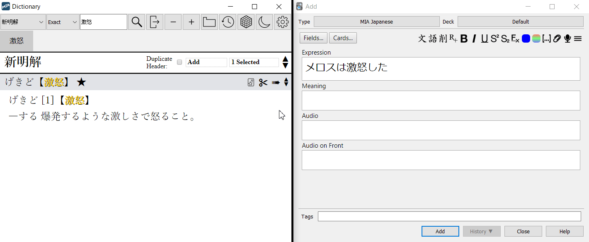
Some dictionaries come pre-loaded with definition headers inside of every definition. Because MIA Dictionary automatically adds headers to all definitions, entries from these dictionaries will appear to have two headers.
For dictionaries where this is the case, mark the “Duplicate Header” checkbox. This will tell the add-on to automatically remove one of the two headers before sending definitions to cards.
Google Images
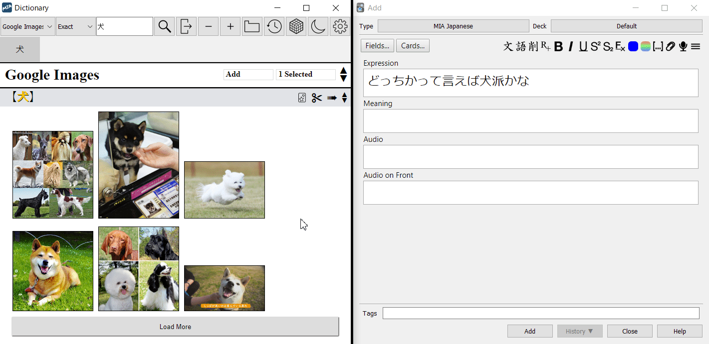
The built-in Google Images dictionary allows you to send images to cards in a similar manner as normal dictionaries. Simply click to select images which images you want to send. Deselect a selected image by clicking it again.
You can modify Google Image’s search region and resizing parameters in Settings.
Forvo
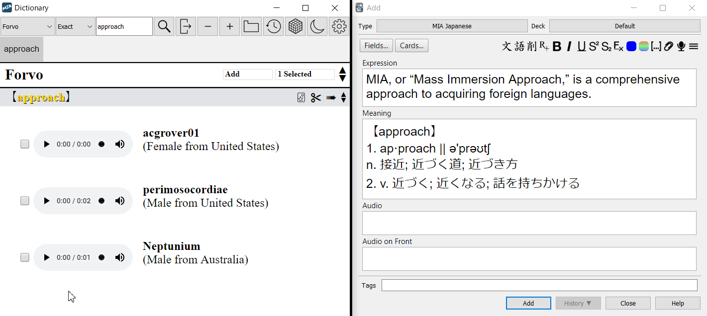
The built-in Forvo dictionary allows you to send audio files to cards in a similar manner as normal dictionaries. Simply mark the checkbox next to the clips you want to send.
You can modify Forvo’s language in Settings.
Card Exporter

The Card Exporter is a tool for quickly and easily creating high-quality vocab and sentence cards.
Export Templates
To use the Exporter, you must create at least one Export Template.
Export Templates function as blueprints for the cards you create with the Exporter. They tell the Exporter what note-type to use and which fields to send the various contents of cards to.
You can create, edit, and delete Export Templates in Settings.
Opening the Exporter
You can open the Exporter by pressing the global hotkey “Ctrl+C+Alt” on PC or “⌘+C+Ctrl” on Mac (press the keys in that order; do not release any until they are all pressed) while the main dictionary window is open.
If text is currently highlighted when the hotkey is pressed, the highlighted text will automatically be sent to the “Sentence” area of the Exporter. If no text is highlighted when the hotkey is pressed, the current contents of the clipboard will be sent instead.

The Exporter can also be opened by pressing the Send to Exporter button on the left side of a definition header. This will load that entry’s definition into the Definitions area of the Card Exporter.
Once the Exporter is open, you can select which Export Template to use with the drop-down on the top left, and what deck to export cards to with the drop-down to the right of that.
You can wipe all currently loaded content from the Exporter at any time with the “Clear Current Card” button on the top right.
Adding Definitions
You can add definitions to the Definitions area of the Exporter by pressing the Send to Exporter button on the left side of a definition header.
What field a given definition is sent to is determined by the currently selected Export Template; the Field Selector drop-down does not have any influence on the Exporter. The Exporter will honor whether Duplicate Header is marked for a given dictionary.
The term being defined in the first definition added to the Exporter will automatically be added to the Word area.
If none of the definition is highlighted, the Send to Exporter button will send the entire definition to the Definitions area of the Exporter. If part of the definition is highlighted, the Send to Exporter button will send the highlighted portion along with the definition’s header.
Images from the built-in Google Images dictionary and audio from the built-in Forvo dictionary are both treated as normal definitions within the Exporter.
If multiple definitions are sent to the same field, they’ll appear on the card in the order they were added to the Exporter. You can remove a definition from the Definitions area by pressing the “X” on the far right. On Mac, in order to remove a definition from the Definitions area, you have to click on the definition once to highlight it before pressing “X”.
Adding Images
You can add an image that’s copied to the clipboard to the Exporter with the global hotkey “Ctrl+Shift+V” on PC or “⌘+Shift+V” on Mac (press the keys in that order; do not release any until they are all pressed). Only one image per card can be added this way. If you add another image to the Exporter after one has already been added, the new image will overwrite the previous one.
You can modify the maximum and width and height of images in Settings.
Because images from the built-in Google Images dictionary are treated as normal definitions, you can add as many as you would like to a single card in the Exporter.
Adding Audio
If an mp3 file is saved to your computer, you can add it to the Exporter by copying it to your clipboard and pressing the global hotkey “Ctrl+Shift+V” on PC or “⌘+Shift+V” on Mac (press the keys in that order; do not release any until they are all pressed).
If you’re on a PC, you can use the free program ShareX to greatly take advantage of this feature. ShareX can be configured so that you can record audio from your computer, save it as an mp3 file, and copy that file to your clipboard all with the press of a single hotkey (tutorial for setting this up here). Combined with the Exporter, this makes adding audio to cards you create from native target language content extremely quickly and easily. Although ShareX is only available for PC, you should be able to get the same effect with similar programs on Mac as well.
Only one mp3 per card can be added this way. If you add another mp3 to the Exporter after one has already been added, the new mp3 will overwrite the previous one.
Because audio files from the built-in Forvo dictionary is treated as normal definitions, you can add as many as you would like to a single card in the Exporter.
Adding Cards
Once you’ve added everything you want to the Exporter, press the “Add” button on the bottom right to create the card and add it to your collection. You can also use the global hotkey “Ctrl+Enter” on PC or “⌘+Enter” on Mac.
Mass Exporting Definitions
You can add definitions to multiple cards at once with the Mass Export Definitions feature.
To use this feature, select the cards you want to add definitions to the browser and go to Edit > Export Definitions.
For each card selected, the add-on will look up the word in the Input field, and export its definitions to the Output Field.
Only entries that match the contents of the Input Field exactly will be exported. Thus, for the feature to work, the Input Field must contain a single, unconjugated word. If the Input Field contains multiple words, or the word is in a conjugated form, no definitions will be exported for that card. Deconjugation Mode is not applicable to this feature.
You can export definitions from up to 3 dictionaries at once. If you only want to export definitions from 1 or 2 dictionaries, simply leave the remaining drop-down(s) as “None”.
The various Output Modes functions the same as in the main dictionary window.
In the case of multiple entries exactly matching the contents of the Input Field for a single dictionary, you can limit how many definitions will be exported with Max Per Dict.
If a frequency list has been installed for a given dictionary’s language, entries will be exported in order of frequency, with the most frequent entry exported first. If a frequency list hasn’t been installed, entries will be exported in alphabetical order.
Settings
You can open the add-on’s Settings by going to “MIA” on Anki’s menu bar and selecting “Dictionary Settings”. Alternately, you can click on the gear icon at the top of the main dictionary window.
You can restore the entirety of Settings to its default configuration at any time by pressing “Restore Defaults” in the bottom left corner of Settings.
If you modify something in Settings while the dictionary is open, the changes will not go into effect until you close and reopen the dictionary.
Dictionary Groups
Check out the Dictionary Group section to learn how Dictionary Groups work.
Adding
To create a new dictionary group, press “Add Dictionary Group”.
Simply choose a unique name, specify which font to display dictionaries in, and select which dictionaries to include.
There are two ways to select a font. You can use the “Font” drop-down to select one that’s already installed on your computer, or specify the location of a font file on your computer with “Font From File”. The “Font From File” option creates a copy of the selected font file to reference in the following directory: C:\Users\[user]\AppData\Roaming\Anki2\addons21\1655992655\user_files\fonts.
Mark the corresponding checkbox to select which dictionaries to include in the group. Make sure to select dictionaries in the order you want them to appear in. The number to the left of checkboxes represents that dictionary’s current position within the group.
You can select every currently installed dictionary with “Select All”, and deselect every dictionary currently selected with “Remove All”.
Editing and Removing
You can view your current Dictionary Groups in the window beneath the “Add Dictionary Group” button. The order they appear in within this window is not important, as Dictionary Groups always appear in alphabetical order within the main dictionary window’s drop-down.
You can press “Edit” to modify a Dictionary Group, and “X” to remove one. Once a Dictionary Group has been created, the name cannot be modified. To change the name of a Dictionary Group, simply delete it and recreate the same group with a different name.
Export Templates
Check out the Card Exporter section to learn how Export Templates work.
Adding
To create a new Export Template, press “Add Export Template”.
Choose a unique name, specify which note-type to use, and select which fields to send each type of information to.
By default, definitions will be sent to whichever field is selected for “Unspecified Dictionaries Field”.
You can also specify for definitions from certain dictionaries to be sent to specific fields. To do this, use the two drop-downs beneath “Unspecified Dictionaries Field” to select a specific dictionary and what field you want its definition sent to, and press “Add”. The current dictionary-field relationships are shown in the window below. To remove one, press the “X” on the far right.
Note that images from the built-in Google Images dictionary and audio files from the built-in Forvo dictionary are both treated as normal definitions within the Exporter. Only images and mp3s pasted into the Card Exporter from outside the add-on will be sent to the “Image Field” and “Audio Field” respectively.
The “Entry Separator” is what gets added between definitions when multiple definitions are sent to a single field. The default is two line breaks (< br >< br >).
Editing and Removing
You can view your current Export Templates in the window beneath the “Add Export Template” button. The order they appear in within this window is not important, as Export Templates always appear in alphabetical order within the Card Exporter.
You can press “Edit” to modify an Export Template, and “X” to remove one. Once an Export Template has been created, the name cannot be modified. To change the name of an Export Template, simply delete it and recreate the same template with a different name.
Options
Open on Startup
When selected, the main dictionary window will automatically open whenever you load an Anki profile.
Highlight Example Sentences
When selected, examples sentences within definitions will be highlighted.
This features works by specifically looking for “「」” brackets. Because of this, this feature will only work with Japanese monolingual dictionaries.
Highlight Searched Term
When selected, the searched term will be highlighted whenever it appears within a definition.
Show Export Target
When selected, the current export target will be displayed to the right side of the main dictionary window’s toolbar.
The export target is the window that’s currently selected for the Send to Field button to export definitions to. There are 4 possible export targets: the browser, the add window, the edit window, and the review screen. If multiple of these windows are open at once, the window most recently selected will be the export target.
If the Send to Field button doesn’t seem to be working, it’s most likely because no export target is currently selected.
Dictionary Tooltips
When selected, tooltips will appear when hovering various icons and buttons related to the add-on.
Global Hotkeys
When selected, the global hotkeys listed on the welcome screen of the main dictionary page will function.
Turn this option off if the add-on’s global hotkeys are causing collisions with other programs.
Open on Global Search
When selected, if the global search hotkey “Ctrl+C+Space” (“⌘+C+B” on Mac) is pressed at a time when the main dictionary window is closed, it will automatically open and search what is currently highlighted.
Max Total Search Results
The maximum number of entries that can be found across all dictionaries in a single search. Searches will be cut off short once this number of entries has been found.
Max Dictionary Search Results
The maximum number of entries that can be found in a single dictionary, in a single search. The add-on will automatically move on to searching the next dictionary once this number of entries has been found in a single dictionary.
Add Cards with Japanese Readings
This feature is for integration with the MIA Japanese add-on.
If MIA Japanese is installed and this option is selected, when a card is generated with the Card Exporter, readings and pitch accents will automatically be generated for definitions that were sent to fields that are listed as active fields in MIA Japanese’s settings.
The manner in which readings and accents are generated is determined by the word button’s settings within MIA Japanese. The exception to this is Audio and Pitch Graphs, which will not be generated regardless of the word button’s settings.
Japanese Readings on Edit
This feature is for integration with the MIA Japanese add-on.
If MIA Japanese is installed and this option is selected, when a definition is sent to a card with the Send to Field button, if the destination field is listed as an active field in MIA Japanese’s settings, readings and pitch accents will automatically be generated for the definition.
The manner in which readings and accents are generated is determined by the word button’s settings within MIA Japanese. The exception to this is Audio and Pitch Graphs, which will not be generated regardless of the word button’s settings.
Google Images Search Region
The results of Google Images searches change depending on the region. Select which region to search here.
Maximum Image Width
The maximum width of an image that’s sent to a card. When an image with a width larger than this is sent to a card, it will automatically be resized so that it’s width matches this value.
This applies to both images from the built-in Google Images dictionary and images pasted into the Card Exporter from outside the add-on.
Maximum Image Height
The maximum height of an image that’s sent to a card. When an image with a height larger than this is sent to a card, it will automatically be resized so that it’s height matches this value.
This applies to both images from the built-in Google Images dictionary and images pasted into the Card Exporter from outside the add-on.
Surround Term (Front)
What appears directly to the left of the term and alternate term on the left side of definition headers.
Surround Term (Back)
What appears directly to the right of the term and alternate term on the left side of definition headers.
Forvo Language
The built-in Forvo dictionary will search for audio in this language.